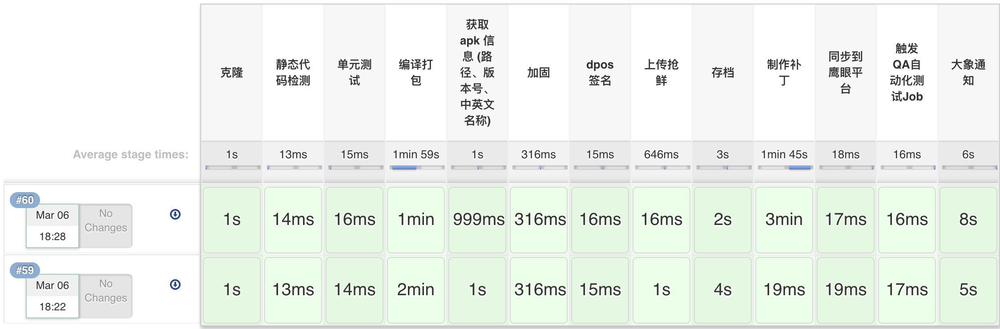
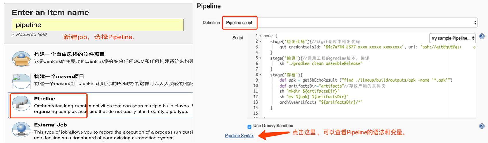
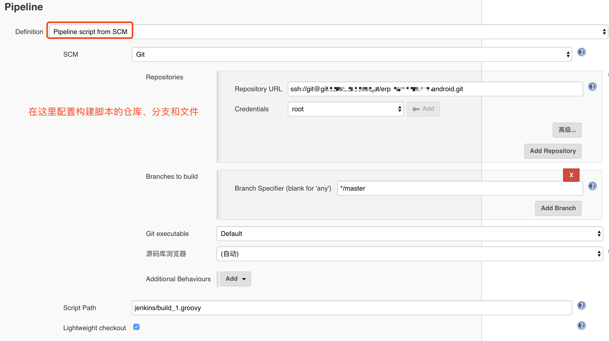
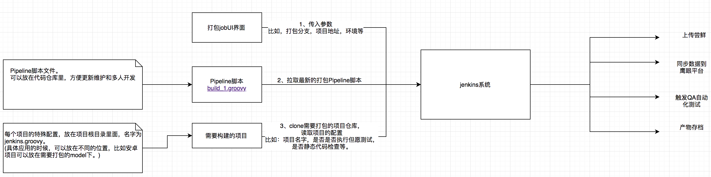
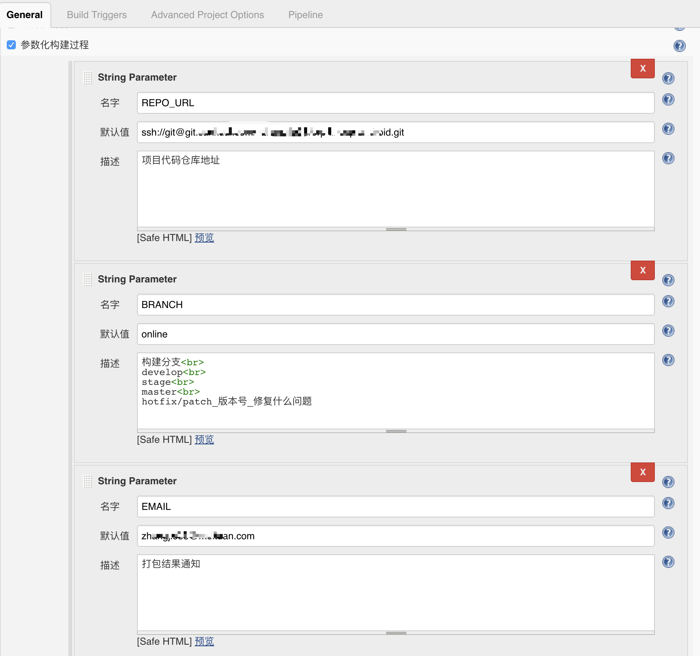
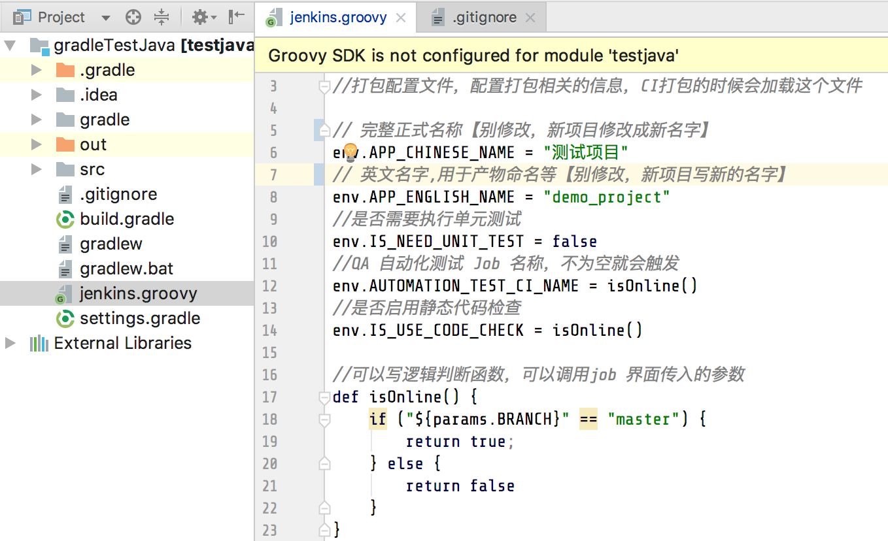
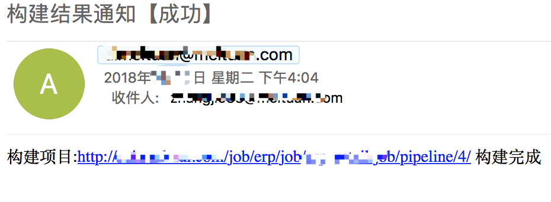
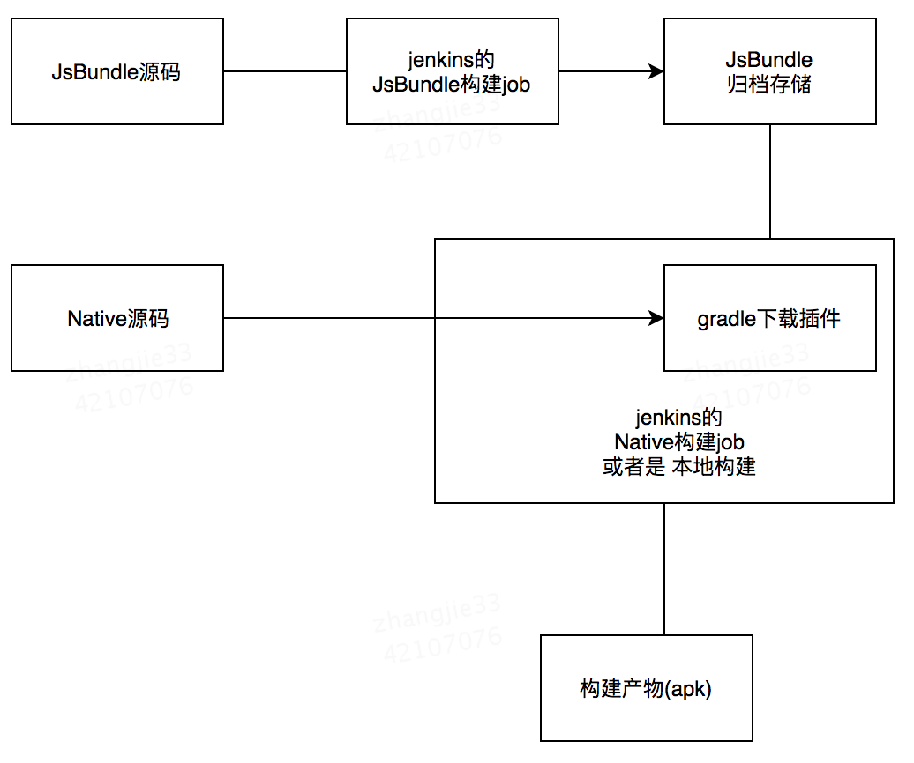

https://tech.meituan.com/erp_cd_jenkins_pipeline.html
张杰 王浩 ·2018-08-02 20:39
一、背景
在日常开发中，我们经常会有发布需求，而且还会遇到各种环境，比如：线上环境（Online），模拟环境（Staging），开发环境（Dev）等。最简单的就是手动构建、上传服务器，但这种方式太过于繁琐，使用持续集成可以完美地解决这个问题，推荐了解一下 Jenkins。
Jenkins 构建也有很多种方式，现在使用比较多的是自由风格的软件项目（Jenkins 构建的一种方式，会结合 SCM 和构建系统来构建你的项目，甚至可以构建软件以外的系统）的方式。针对单个项目的简单构建，这种方式已经足够了，但是针对多个类似且又存在差异的项目，就难以满足要求，否则就需要大量的 job 来支持，这就存在，一个小的变动，就需要修改很多个 job 的情况，难以维护。我们团队之前就存在这样的问题。
目前，我们团队主要负责开发和维护多个 Android 项目，而且每个项目都需要构建，每个构建流程非常类似但又存在一定的差异。比如构建的流程大概如下：
- 克隆代码；
- 静态代码检查（可选）；
- 单元测试（可选）；
- 编译打包 APK 或者热补丁；
- APK 分析，获取版本号（VersionCode），包的 Hash 值（apkhash）等；
- 加固；
- 上传测试分发平台；
- 存档（可选）；
- 触发自动化测试（可选）；
- 通知负责人构建结果等。
整个流程大体上是相同的，但是又存在一些差异。比如有的构建可以没有单元测试，有的构建不用触发自动化测试，而且构建结果通知的负责人也不同。如果使用自由风格软件项目的普通构建，每个项目都要建立一个 job 来处理流程（可能会调用其他 job）。
这种处理方式原本也是可以的，但是必须考虑到，可能会有新的流程接入（比如二次签名），构建流程也可能存在 Bug 等多种问题。无论哪种情况，一旦修改主构建流程，每个项目的 job 都需要修改和测试，就必然会浪费大量的时间。针对这种情况，我们使用了 Pipeline 的构建方式来解决。
当然，如果有项目集成了 React Native，还需要构建 JsBundle。在 Native 修改以后，JsBundle 不一定会有更新，如果是构建 Native 的时候一起构建 JsBundle，就会造成很多资源浪费。并且直接把 JsBundle 这类大文件放在 Native 的 Git 仓库里，也不是特别合适。
本文是分享一种Pipeline的使用经验，来解决这类问题。
二、Pipeline 的介绍
Pipeline 也就是构建流水线，对于程序员来说，最好的解释是：使用代码来控制项目的构建、测试、部署等。使用它的好处有很多，包括但不限于：
- 使用 Pipeline 可以非常灵活的控制整个构建过程；
- 可以清楚的知道每个构建阶段使用的时间，方便构建的优化；
- 构建出错，使用 stageView 可以快速定位出错的阶段；
- 一个 job 可以搞定整个构建，方便管理和维护等。
Stage View

三、使用 Pipeline 构建
新建一个 Pipeline 项目，写入 Pipeline 的构建脚本，就像下面这样:

对于单个项目来说，使用这样的 Pipeline 来构建能够满足绝大部分需求，但是这样做也有很多缺陷，包括：
- 多个项目的 Pipeline 打包脚本不能公用，导致一个项目写一份脚本，维护比较麻烦。一个变动，需要修改多个 job 的脚本；
- 多个人维护构建 job 的时候，可能会覆盖彼此的代码；
- 修改脚本失败以后，无法回滚到上个版本；
- 无法进行构建脚本的版本管理，老版本发修复版本需要构建，可能和现在用的 job 版本已经不一样了，等等。
四、把 Pipeline 当代码写
既然存在缺陷，我们就要找更好的方式，其实 Jenkins 提供了一个更优雅的管理 Pipeline 脚本的方式，在配置项目 Pipeline 的时候，选择Pipeline script from SCM，就像下面这样：

这样，Jenkins 在启动 job 的时候，首先会去仓库里面拉取脚本，然后再运行这个脚本。在脚本里面，我们规定的构建方式和流程，就会按部就班地执行。构建的脚本，可以实现多人维护，还可以 Review，避免出错。 以上就算搭建好了一个基础，而针对多个项目时，还有一些事情要做，不可能完全一样，以下是构建的结构图：

如此以来，我们的构建数据来源分为三部分：job UI 界面、仓库的通用 Pipeline 脚本、项目下的特殊配置，我们分别来看一下：
job UI 界面（参数化构建）
在配置 job 的时候，选择参数化构建过程，传入项目仓库地址、分支、构建通知人等等。还可以增加更多的参数 ，这些参数的特点是，可能需要经常修改，比如灵活选择构建的代码分支。

项目配置
在项目工程里面，放入针对这个项目的配置，一般是一个项目固定，不经常修改的参数，比如项目名字，如下图：

注入构建信息
QA 提一个 Bug，我们需要确定，这是哪次的构建，或者要知道 commitId，从而方便进行定位。因此在构建时，可以把构建信息注入到 APK 之中。
- 把属性注入到
gradle.properties
# 应用的后端环境
APP_ENV=Beta
# CI 打包的编号，方便确定测试的版本，不通过 CI 打包，默认是 0
CI_BUILD_NUMBER=0
# CI 打包的时间，方便确定测试的版本，不通过 CI 打包，默认是 0
CI_BUILD_TIMESTAMP=0
- 在 build.gradle 里设置 buildConfigField
#使用的是 gradle.properties 里面注入的值
buildConfigField "String", "APP_ENV", "\"${APP_ENV}\""
buildConfigField "String", "CI_BUILD_NUMBER", "\"${CI_BUILD_NUMBER}\""
buildConfigField "String", "CI_BUILD_TIMESTAMP", "\"${CI_BUILD_TIMESTAMP}\""
buildConfigField "String", "GIT_COMMIT_ID", "\"${getCommitId()}\""
// 获取当前 Git commitId
String getCommitId() {
try {
def commitId = 'git rev-parse HEAD'.execute().text.trim()
return commitId;
} catch (Exception e) {
e.printStackTrace();
}
}
3. 显示构建信息
在App里，找个合适的位置，比如开发者选项里面，把刚才的信息显示出来。QA提Bug时，要求他们把这个信息一起带上
mCIIdtv.setText(String.format("CI 构建号:%s", BuildConfig.CI_BUILD_NUMBER));
mCITimetv.setText(String.format("CI 构建时间:%s", BuildConfig.CI_BUILD_TIMESTAMP));
mCommitIdtv.setText(String.format("Git CommitId:%s", BuildConfig.GIT_COMMIT_ID));
仓库的通用 Pipeline 脚本
通用脚本是抽象出来的构建过程，遇到和项目有关的都需要定义成变量，再从变量里进行读取，不要在通用脚本里写死。
node {
try{
stage('检出代码'){//从git仓库中检出代码
git branch: "${BRANCH}",credentialsId: 'xxxxx-xxxx-xxxx-xxxx-xxxxxxx', url: "${REPO_URL}"
loadProjectConfig();
}
stage('编译'){
//这里是构建，你可以调用job入参或者项目配置的参数，比如：
echo "项目名字 ${APP_CHINESE_NAME}"
//可以判断
if (Boolean.valueOf("${IS_USE_CODE_CHECK}")) {
echo "需要静态代码检查"
} else {
echo "不需要静态代码检查"
}
}
stage('存档'){//这个演示的Android的项目，实际使用中，请根据自己的产物确定
def apk = getShEchoResult ("find ./lineup/build/outputs/apk -name '*.apk'")
def artifactsDir="artifacts"//存放产物的文件夹
sh "mkdir ${artifactsDir}"
sh "mv ${apk} ${artifactsDir}"
archiveArtifacts "${artifactsDir}/*"
}
stage('通知负责人'){
emailext body: "构建项目:${BUILD_URL}\r\n构建完成", subject: '构建结果通知【成功】', to: "${EMAIL}"
}
} catch (e) {
emailext body: "构建项目:${BUILD_URL}\r\n构建失败，\r\n错误消息：${e.toString()}", subject: '构建结果通知【失败】', to: "${EMAIL}"
} finally{
// 清空工作空间
cleanWs notFailBuild: true
}
}
// 获取 shell 命令输出内容
def getShEchoResult(cmd) {
def getShEchoResultCmd = "ECHO_RESULT=`${cmd}`\necho \${ECHO_RESULT}"
return sh (
script: getShEchoResultCmd,
returnStdout: true
).trim()
}
//加载项目里面的配置文件
def loadProjectConfig(){
def jenkinsConfigFile="./jenkins.groovy"
if (fileExists("${jenkinsConfigFile}")) {
load "${jenkinsConfigFile}"
echo "找到打包参数文件${jenkinsConfigFile}，加载成功"
} else {
echo "${jenkinsConfigFile}不存在,请在项目${jenkinsConfigFile}里面配置打包参数"
sh "exit 1"
}
}
轻轻的点两下Build with Parameters -> 开始构建，然后等几分钟的时间，就能够收到邮件。

五、其他构建结构
以上，仅仅是针对我们当前遇到问题的一种不错的解决方案，可能并不完全适用于所有场景，但是可以根据上面的结构进行调整，比如：
- 根据 stage 拆分出不同的 Pipeline 脚本，这样方便 CI 的维护，一个或者几个人维护构建中的一个 stage；
- 把构建过程中的 stage 做成普通的
自由风格的软件项目的 job，把它们作为基础服务，在 Pipeline 中调用这些基础服务等。
六、当遇上 React Native
当项目引入了 React Native 以后，因为技术栈的原因，React Native 的页面是由前端团队开发，但容器和原生组件是 Android 团队维护，构建流程也发生了一些变化。
方案对比
| 方案 | 说明 | 缺点 | 优点 |
|---|---|---|---|
| 手动拷贝 | 等 JsBundle 构建好了，再手动把构建完成的产物，拷贝到 Native 工程里面 | 1. 每次手动操作，比较麻烦，效率低，容易出错 |
2. 涉及到跨端合作，每次要去前端团队主动拿 JsBundle
3. Git 不适合管理大文件和二进制文件 | 简单粗暴 |
| 使用 submodule 保存构建好的 JsBundle | 直接把 JsBundle 放在 Native 仓库的一个 submodule 里面，由前端团队主动更新，每次更新 Native 的时候，直接就拿到了最新的 JsBundle | 1. 简单无开发成本
2. 不方便单独控制 JsBundle 的版本
3. Git 不适合管理大文件和二进制文件 | 前端团队可以主动更新 JsBundle |
| 使用 submodule 管理 JsBundle 的源码 | 直接把 JsBundle 的源码放在 Native 仓库的一个 submodule 里面，由前端团队开发更新，每次构建 Native 的时候，先构构建 JsBundle | 1. 不方便单独控制 JsBundle 的版本
2. 即使 JsBundle 无更新，也需要构建，构建速度慢，浪费资源 | 方便灵活 |
| 分开构建，产物存档 | JsBundle 和 Native 分开构建，构建完了的 JsBundle 分版本存档，Native 构建的时候，直接去下载构建好了的 JsBundle 版本 | 1. 通过配置管理 JsBundle，解放 Git
2. 方便 Jenkins 构建的时候，动态配置需要的 JsBundle 版本 | 1. 需要花费时间建立流程
2. 需要开发 Gradle 的 JsBundle 下载插件 |
前端团队开发页面，构建后生成 JsBundle，Android 团队拿到前端构建的 JsBundle，一起打包生成最终的产物。 在我们开发过程中，JsBundle 修改以后，不一定需要修改 Native，Native 构建的时候，也不一定每次都需要重新构建 JsBundle。并且这两个部分由两个团队负责，各自独立发版，构建的时候也应该独立构建，不应该融合到一起。
综合对比，我们选择了使用分开构建的方式来实现。
分开构建
因为需要分开发布版本，所以 JsBundle 的构建和 Native 的构建要分开，使用两个不同的 job 来完成，这样也方便两个团队自行操作，避免相互影响。 JsBundle 的构建，也可以参考上文提到的 Pipeline 的构建方式来做，这里不再赘述。
在独立构建以后，怎么才能组合到一起呢？我们是这样思考的：JsBundle 构建以后，分版本的储存在一个地方，供 Native 在构建时下载需要版本的 JsBundle，大致的流程如下：

这个流程有两个核心，一个是构建的 JsBundle 归档存储，一个是在 Native 构建时去下载。
JsBundle 归档存储
| 方案 | 缺点 | 优点 |
|---|---|---|
| 直接存档在 Jenkins 上面 | 1. JsBundle 不能汇总浏览 |
2. Jenkins 很多人可能要下载，命名带有版本号，时间，分支等，命名不统一，不方便构建下载地址
3. 下载 Jenkins 上面的产物需要登陆授权，比较麻烦 | 1. 实现简单，一句代码就搞定，成本低 |
| 自己构建一个存储服务 | 1. 工程大，开发成本高
2. 维护起来麻烦 | 可扩展，灵活性高 |
| MSS
(美团存储服务) | 无 | 1. 储存空间大
2. 可靠性高，配合 CDN 下载速度快
3. 维护成本低， 价格便宜 |
这里我们选择了 MSS。 上传文件到 MSS，可以使用s3cmd，但毕竟不是每个 Slave 上面都有安装，通用性不强。为了保证稳定可靠，这里基于 MSS 的 SDK 写个小工具即可，比较简单，几行代码就可以搞定。
private static String TenantId = "mss_TenantId==";
private static AmazonS3 s3Client;
public static void main(String[] args) throws IOException {
if (args == null || args.length != 3) {
System.out.println("请依次输入：inputFile、bucketName、objectName");
return;
}
s3Client = AmazonS3ClientProvider.CreateAmazonS3Conn();
uploadObject(args[0], args[1], args[2]);
}
public static void uploadObject(String inputFile, String bucketName, String objectName) {
try {
File file = new File(inputFile);
if (!file.exists()) {
System.out.println("文件不存在：" + file.getPath());
return;
}
s3Client.putObject(new PutObjectRequest(bucketName, objectName, file));
System.out.printf("上传%s到MSS成功: %s/v1/%s/%s/%se", inputFile, AmazonS3ClientProvider.url, TenantId, bucketName, objectName);
} catch (AmazonServiceException ase) {
System.out.println("Caught an AmazonServiceException, which " +
"means your request made it " +
"to Amazon S3, but was rejected with an error response" +
" for some reason.");
System.out.println("Error Message: " + ase.getMessage());
System.out.println("HTTP Status Code: " + ase.getStatusCode());
System.out.println("AWS Error Code: " + ase.getErrorCode());
System.out.println("Error Type: " + ase.getErrorType());
System.out.println("Request ID: " + ase.getRequestId());
} catch (AmazonClientException ace) {
System.out.println("Caught an AmazonClientException, which " +
"means the client encountered " +
"an internal error while trying to " +
"communicate with S3, " +
"such as not being able to access the network.");
System.out.println("Error Message: " + ace.getMessage());
}
}
我们直接在 Pipeline 里构建完成后，调用这个工具就可以了。
当然，JsBundle 也分类型，在调试的时候可能随时需要更新，这些 JsBundle 不需要永久保存，一段时间后就可以删除了。在删除时，可以参考 MSS 生命周期管理。所以，我们在构建 JsBundle 的 job 里，添加一个参数来区分。
//根据TYPE，上传到不同的bucket里面
def bucket = "rn-bundle-prod"
if ("${TYPE}" == "dev") {
bucket = "rn-bundle-dev" //有生命周期管理，一段时间后自动删除
}
echo "开始JsBundle上传到MSS"
//jar地址需要替换成你自己的
sh "curl -s -S -L http://s3plus.sankuai.com/v1/mss_xxxxx==/rn-bundle-prod/rn.bundle.upload-0.0.1.jar -o upload.jar"
sh "java -jar upload.jar ${archiveZip} ${bucket} ${PROJECT}/${targetZip}"
echo "上传JsBundle到MSS:${archiveZip}"
Native 构建时 JsBundle 的下载
为了实现构建时能够自动下载，我们写了一个 Gradle 的插件。
首先要在 build.gradle 里面配置插件依赖：
classpath 'com.zjiecode:rn-bundle-gradle-plugin:0.0.1'
在需要的 Module 应用插件：
apply plugin: 'mt-rn-bundle-download'
在 build.gradle 里面配置 JsBundle 的信息：
RNDownloadConfig {
//远程文件目录,因为有多种类型，所以这里可以填多个。
paths = [
'http://msstest-corp.sankuai.com/v1/mss_xxxx==/rn-bundle-dev/xxx/',
'http://msstest-corp.sankuai.com/v1/mss_xxxx==/rn-bundle-prod/xxx/'
]
version = "1"//版本号，这里使用的是打包JsBundle的BUILD_NUMBER
fileName = 'xxxx.android.bundle-%s.zip' //远程文件的文件名,%s会用上面的version来填充
outFile = 'xxxx/src/main/assets/JsBundle/xxxx.android.bundle.zip' // 下载后的存储路径，相对于项目根目录
}
插件会在 package 的 task 前面，插入一个下载的 task，task 读取上面的配置信息，在打包阶段检查是否已经存在这个版本的 JsBundle。如果不存在，就会去归档的 JsBundle 里，下载我们需要的 JsBundle。 当然，这里的 version 可以使用上文介绍的注入构建信息的方式，通过 job 参数的方式进行注入。这样在 Jenkins 构建 Native 时，就可以动态地填写需要 JsBundle 的版本了。
这个 Gradle 插件，我们已经放到到了 github 仓库，你可以基于此修改，当然，也欢迎 PR。
https://github.com/zjiecode/rn-bundle-gradle-plugin
六、总结
我们把一个构建分成了好几个部分，带来的好处如下：
- 核心构建过程，只需要维护一份，减轻维护工作；
- 方便多个人维护构建 CI，避免 Pipeline 代码被覆盖；
- 方便构建 job 的版本管理，比如要修复某个已经发布的版本，可以很方便切换到发布版本时候用的 Pipeline 脚本版本；
- 每个项目，配置也比较灵活，如果项目配置不够灵活，可以尝试定义更多的变量；
- 构建过程可视化，方便针对性优化和错误定位等。
当然，Pipeline 也存在一些弊端，比如：
- 语法不够友好，但好在 Jenkins 提供了一个比较强大的帮助工具（Pipeline Syntax）；
- 代码测试繁琐，没有本地运行环境，每次测试都需要提交运行一个 job，等等。
当项目集成了 React Native 时，配合 Pipeline，我们可以把 JsBundle 的构建产物上传到 MSS 归档。在构建 Native 的时候 ，可以动态地下载。
七、作者
- 张杰，美团点评高级 Android 工程师，2017 年加入餐饮平台成都研发中心，主要负责餐饮平台 B 端应用开发。
- 王浩，美团点评高级 Android 工程师，2017 年加入餐饮平台成都研发中心，主要负责餐饮平台 B 端应用开发。
八、招聘广告
本文作者来自美团成都研发中心（是的，我们在成都建研发中心啦）。我们在成都有众多后端、前端和测试的岗位正在招人，欢迎大家投递简历：songyanwei@meituan.com。